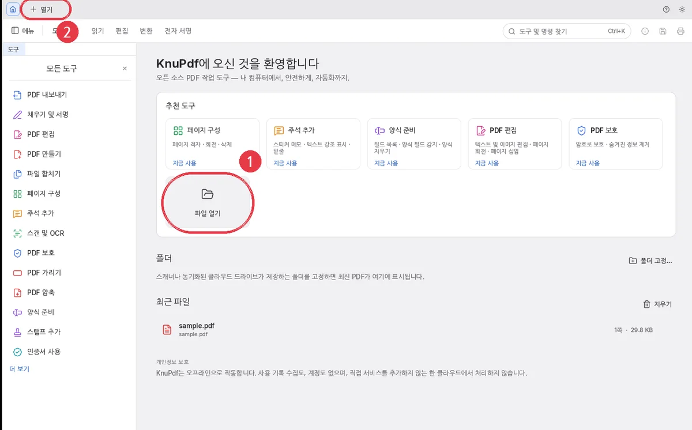
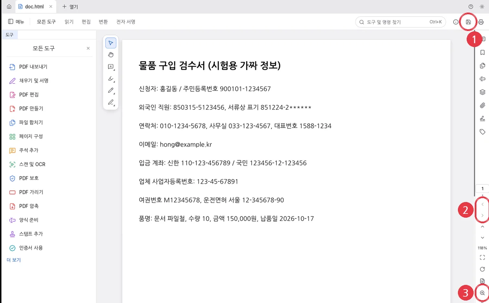
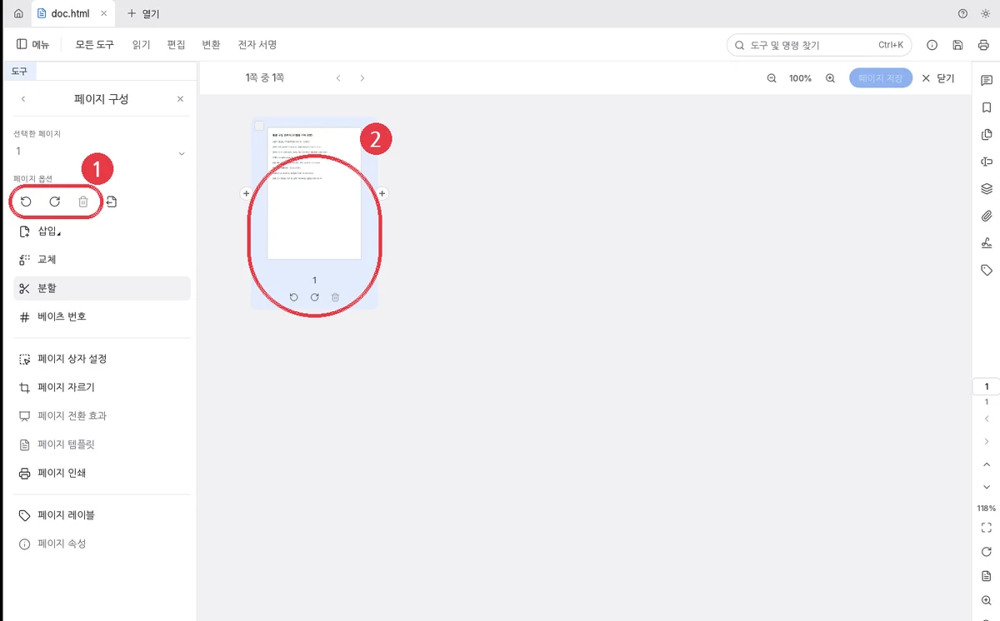
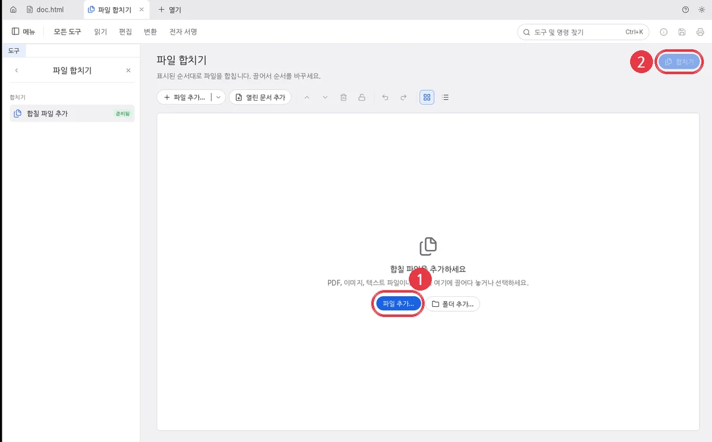
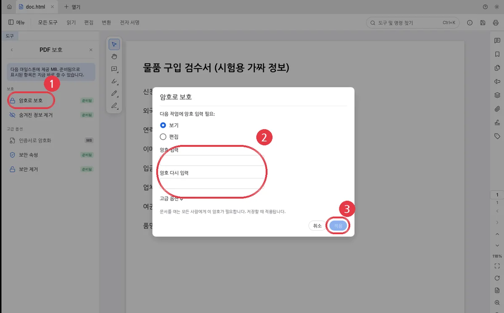
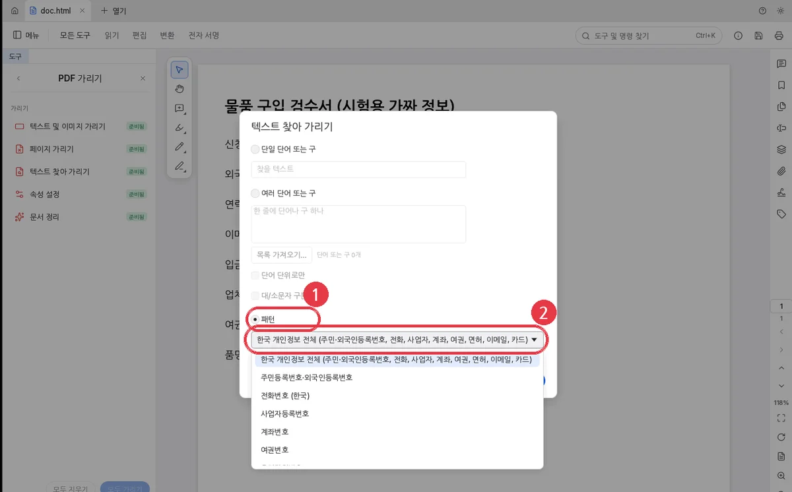
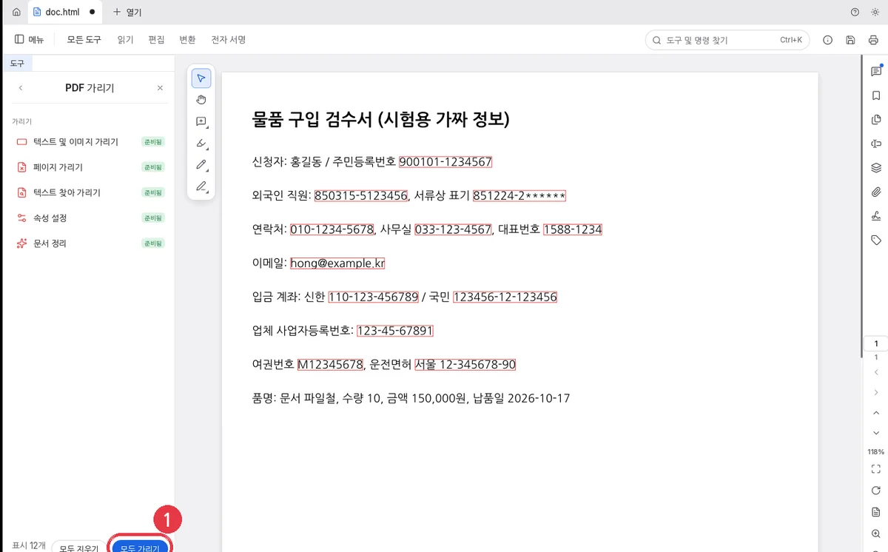
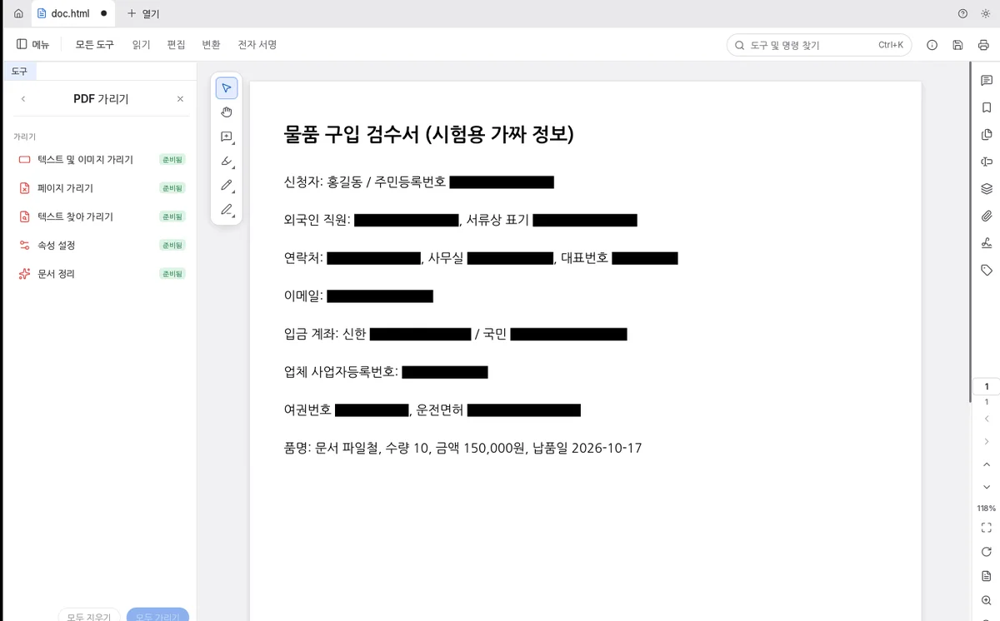
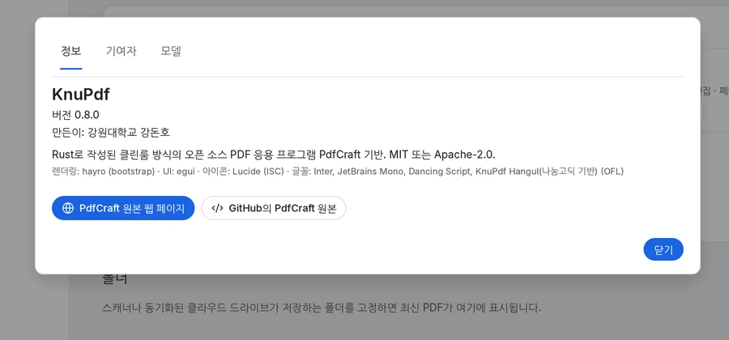

KnuPdf가 뭐예요?
PDF는 종이 문서를 컴퓨터 안에 그대로 담은 파일이에요. 학교 가정통신문, 안내문, 신청서가 PDF로 많이 와요.
KnuPdf는 이 PDF를 열어 보고, 페이지를 돌리거나 합치고, 비밀번호를 걸고, 개인정보를 지울 수 있는 프로그램이에요. 인터넷에 파일을 보내지 않고 내 컴퓨터 안에서만 일해서 안전해요.
미션 1
컴퓨터에 설치하기
한 번만 하면 돼요. 처음이라면 어른과 함께 해요.
KnuPdf-0.8.3-windows-x64-setup.exe 파일을 마우스로 두 번 딸깍 눌러요.
파란 창에 "Windows의 PC 보호"가 나오면 추가 정보를 누르고, 아래에 생기는 실행을 눌러요.
"이 앱이 디바이스를 변경하도록 허용하시겠어요?"가 나오면 예를 눌러요.
설치 창에서 다음을 계속 누르고, 마지막에 설치, 그다음 마침을 눌러요.
바탕 화면에 파란 네모 K 아이콘이 생기면 성공이에요.
왜 파란 경고 창이 나와요?KnuPdf는 새로 만든 프로그램이라 Windows가 아직 잘 몰라서 조심하라고 알려 주는 거예요. 학교나 회사 컴퓨터라면 컴퓨터 담당 선생님께 먼저 여쭤봐요.
미션 2
KnuPdf 켜고 PDF 열기
바탕 화면의 K 아이콘을 두 번 눌러 KnuPdf를 켜요.
가운데 파일 열기(그림의 1번)나, 맨 위 + 열기(2번)를 눌러요.
열고 싶은 PDF를 골라 열기를 눌러요.

KnuPdf 첫 화면. 왼쪽에는 쓸 수 있는 도구가 줄지어 있어요.
더 쉬운 방법PDF 파일을 마우스로 꾹 눌러 KnuPdf 창 위로 끌어다 놓아도 열려요. 한 번 연 파일은 첫 화면 "최근 파일"에 남아서 다음에 바로 열 수 있어요.
미션 3
크게 보고, 페이지 넘기기
오른쪽의 위·아래 화살표(그림의 2번)를 누르면 앞 페이지, 다음 페이지로 가요.
돋보기(3번)를 누르면 글자가 크게 보여요. Ctrl을 누른 채 마우스 휠을 굴려도 돼요.
1번 저장 단추는 미션 8에서 써요.

PDF를 연 모습. 가운데에 문서가 보여요.
미션 4
페이지 돌리기·지우기
옆으로 누운 페이지를 바로 세우거나, 필요 없는 페이지를 뺄 때 써요.
왼쪽 도구 목록에서 페이지 구성을 눌러요.
위쪽 단추(그림의 1번)로 고른 페이지를 왼쪽·오른쪽으로 돌리거나 휴지통으로 지워요.
가운데 페이지 그림(2번) 아래의 작은 단추로도 한 장씩 돌리고 지울 수 있어요.

실수했어요!괜찮아요. Ctrl + Z를 누르면 방금 한 일이 취소돼요.
미션 5
여러 PDF를 하나로 합치기
왼쪽 도구 목록에서 파일 합치기를 누르고, 합칠 파일 추가를 눌러요.
파일 추가…(그림의 1번)를 눌러 합칠 PDF들을 골라요. 파일을 이 칸에 끌어다 놓아도 돼요.
파일 순서를 마우스로 끌어서 바꿔요. 위에 있는 파일이 앞쪽 페이지가 돼요.
오른쪽 위 합치기(2번)를 누르면 새 PDF 하나가 만들어져요.

미션 6
비밀번호 걸기
비밀번호를 아는 사람만 PDF를 열 수 있게 해요.
왼쪽 도구 목록에서 PDF 보호를 누르고, 암호로 보호(그림의 1번)를 눌러요.
"보기"가 골라진 채로, 암호 입력과 암호 다시 입력 칸(2번)에 같은 비밀번호를 두 번 써요.
적용(3번)을 누르고, 꼭 저장(미션 8)까지 해요. 저장해야 비밀번호가 걸려요.

꼭 기억해요비밀번호를 잊어버리면 아무도 그 PDF를 열 수 없어요. 비밀번호는 안전한 곳에 적어 두고, 다른 친구에게 알려 주지 않아요.
미션 7
개인정보 한 번에 지우기
주민등록번호, 전화번호, 계좌번호, 이메일처럼 남이 보면 안 되는 정보를 찾아서 검은 상자로 완전히 지워요.
왼쪽 도구 목록에서 PDF 가리기를 누르고 텍스트 찾아 가리기를 눌러요.
창이 뜨면 패턴(그림의 1번)을 고르고, 목록(2번)에서 한국 개인정보 전체를 그대로 둬요. 주민등록번호만, 전화번호만처럼 하나만 고를 수도 있어요.
모두 표시를 누르면 찾은 곳에 빨간 테두리가 생겨요. 아직 지워지지 않았으니 잘 찾았는지 눈으로 확인해요.
왼쪽 아래 모두 가리기를 누르고, 확인 창에서 적용을 눌러요. 빨간 테두리가 검은 상자로 바뀌면 지워진 거예요.
다른 이름으로 저장(미션 8)해요.

패턴 목록: 한국 개인정보 전체, 주민등록번호·외국인등록번호, 전화번호, 사업자등록번호, 계좌번호, 여권번호, 운전면허번호

찾은 곳: 빨간 테두리. 1번 모두 가리기를 눌러요.

다 지운 모습: 검은 상자. 품명·금액은 그대로예요.
되돌릴 수 없어요적용하고 저장하면 지운 글자는 다시 살릴 수 없어요. 그래서 원래 파일은 그대로 두고, 다른 이름으로 저장해서 새 파일을 만들어요.
사진 속 글자는 못 찾아요종이를 스캔한 사진 같은 PDF는 글자가 그림이라 찾지 못해요. 그럴 때는 텍스트 및 이미지 가리기로 지울 곳을 마우스로 직접 네모나게 그려요.
미션 8
저장하기
지금 파일에 그대로 저장하려면 오른쪽 위 저장 단추(미션 3 그림의 1번)를 누르거나 Ctrl + S를 눌러요.
새 파일로 따로 저장하려면 메뉴 → 파일 → 다른 이름으로 저장…(또는 Ctrl + Shift + S)을 눌러 새 이름을 써요.
탭 이름 옆에 까만 점이 있으면 아직 저장하지 않은 거예요. 저장하면 점이 사라져요.
도움말
이럴 땐 어떻게 해요?
화면 글자가 영어로 나와요.
메뉴 → 편집 → 환경설정…(또는 Ctrl + ,)을 열고 표시 언어를 한국어로 골라요.
방금 한 걸 취소하고 싶어요.
Ctrl + Z를 눌러요. 다시 하고 싶으면 Ctrl + Shift + Z예요.
도구를 못 찾겠어요.
맨 위 도구 및 명령 찾기 칸(Ctrl + K)에 "회전", "합치기", "암호"처럼 하고 싶은 일을 써 보세요.
PDF를 한글(.hwpx) 파일로 바꿀 수 있나요?
네. 왼쪽 도구 목록에서 PDF 내보내기를 누르고 한글 (.hwpx)를 고른 뒤, 저장할 이름을 정해요. 한글 프로그램에서 글자를 고쳐 쓸 수 있어요. 모양이 PDF와 조금 다를 수 있으니 꼭 열어서 확인해요.
설치하지 않고 쓸 수 있나요?
네. 인터넷 브라우저에서 쓰는 KnuPdf 웹판이 있어요. 이것도 파일을 내 브라우저 안에서만 다뤄요. 설치 없이 쓰는 휴대용 zip도 있어요(압축을 풀고 KnuPdf.exe를 실행).
프로그램 버전과 만든 사람이 궁금해요.
메뉴 → 도움말 → KnuPdf 정보를 눌러요.

우리의 약속다른 사람의 이름, 주민등록번호, 전화번호는 그 사람의 소중한 비밀이에요. 친구나 가족의 정보가 담긴 PDF를 다른 사람에게 보낼 때는 먼저 미션 7로 지우고 보내요.